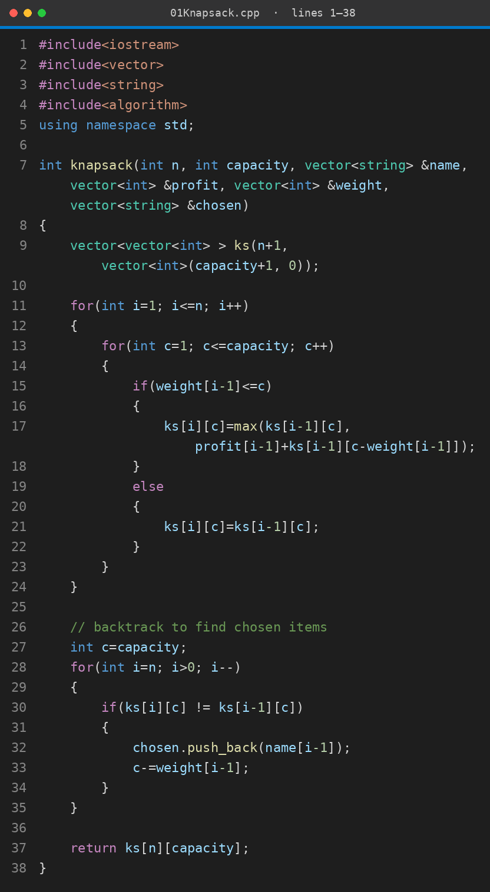
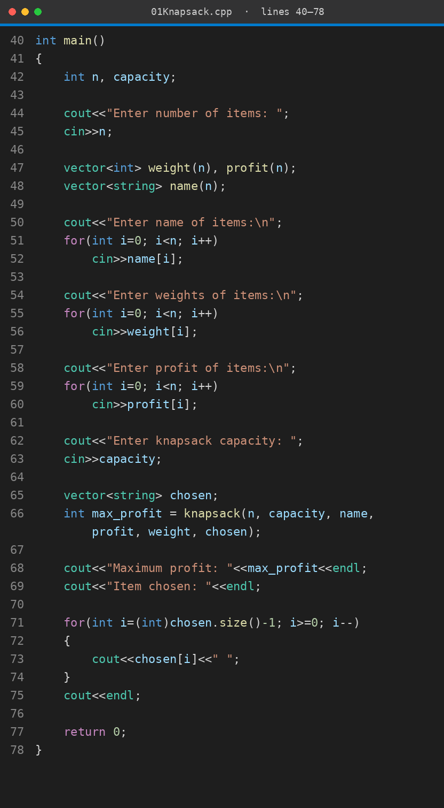

We have items with a profit and a weight, and a bag with limited capacity. We want the maximum total profit. Each item is either taken completely or left out, so breaking an item is not allowed. The greedy choice does not always work here, so we solve smaller problems first and store their answers in a table.
Time O(n × capacity) · Space O(n × capacity)
